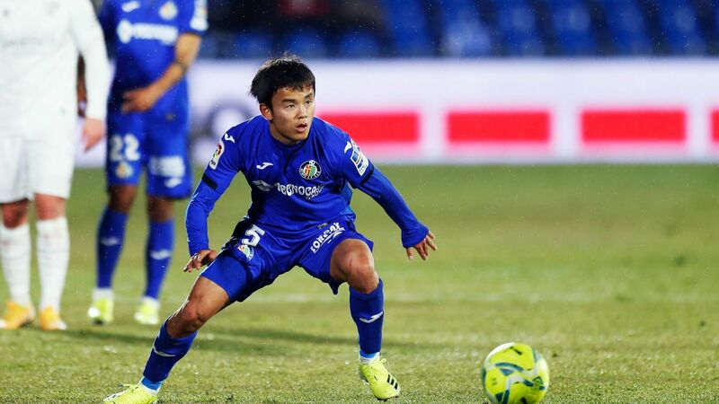

-

久保建英（ビジャレアル）
日本サッカー界の宝
カンテラ育ちの攻撃的ミッドフィルダー。
足元の技術の高さはもちろん、高いサッカーIQの持ち主。
常にルックアップした状態から高い状況判断力を駆使。 正確な判断と局面を打開する鋭いスルーパスが光る。
日本サッカー史上最高の逸材との呼び声も高く、期待が集まる。 -
南野拓実（リヴァプール）
縦横無尽に駆け回るMF
爽やかなルックスからは想像できない献身的なプレーでチームに貢献する攻撃的ミッドフィルダー。 世界最高峰のチームでさらに成長中。
トップ下はもちろん、ワントップやインサイドハーフもこなせるユーティリティ性の持ち主。
運動量豊富なことに加え、オフザボールの動きの質が非常に高い。 得点力にさらなる磨きがかかると日本の頼れるエースとなるはず。 -
冨安健洋（ボローニャ）
次世代型センターバック
若くして海外にわたり、急成長中。 守備の国イタリアにおいて指揮官からも絶大な信頼を得る。 守備面はもちろん、サイドバックを任されることもあり積極的な攻撃参加を見せる。
後ろからの攻撃の組み立ても得意で、正確な前線へのフィードが光る。 日本のディフェンスリーダーとしてチームを引っ張る存在へ。 -
田中碧（川崎フロンターレ）
献身的プレーメーカー
フロンターレにおいて成長を遂げているボランチ。 攻守両面において豊富な運動量と冷静な判断でチームを支える。 積極的な攻撃参加でゴールを奪うシーンも多々見られる。
中盤のリーダーとして代表での活躍が期待される。 海外移籍など今後のステップアップにも注目。 -

上田綺世（鹿島アントラーズ）
圧倒的オフザボール
今季鹿島で大活躍をしたストライカー。 世代別代表ではエースとして得点を量産。 オフザボールの動きが格別で、日本人らしからぬ動き出しを見せる。
ここまで決定力不足が揶揄されてきたが、今季の活躍を見るとその点も解消されつつあるように思われる。 日本代表の未来のエースとして期待がかかる。 -
三苫薫（川崎フロンターレ）
万能型ドリブラー
大卒一年目にして今季川崎で大活躍を果たす。 ストライドの大きいドリブルと細かな切り返しやボディーフェイントを織り交ぜ、ディフェンス陣を手玉に取る。 また、ドリブルだけでなく正確なパスで今期はアシストも量産。
ゴールを奪う力も兼ね備えており、特にファーに打つと見せかけてニアをぶち抜くシーンが今期は数多く見られた。 日本人選手としては珍しい選手であり、今後の成長に期待。 -
斉藤光毅（ロンメルSK）
切れ味鋭いドリブル
横浜FCにおいて大車輪の活躍を見せ海外へステップアップ。 繊細なボールタッチと相手の懐に潜り込むようなドリブルで敵を翻弄する。 体のサイズとしては大きくないが、ディフェンスに当たり負けしないボディコントロールも魅力。
左サイドからカットインしてのシュートやアシストが光る。 同世代の久保建英に負けない活躍が期待される。 -
西川潤（セレッソ大阪）
天才レフティー
爽やかなルックスで注目されるが、サッカーの技術もピカイチ。 世代別代表では10番を背負い、チームの中心として活躍してきた。 左足から繰り出される正確なパスでのアシストはもちろん、独特のテンポでタメを作ったり繊細なタッチで相手をかわすのも得意。
一部の噂ではバルセロナが獲得に動いているという情報も。 同世代の久保建英と重なる部分も多いが、二人のレフティーの共演を日本代表で見たいと願うファンも多いのでは。